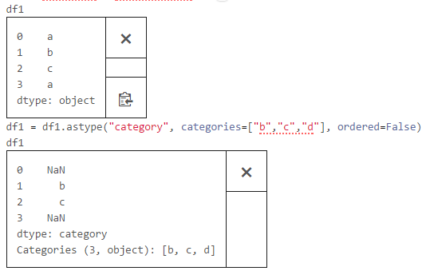
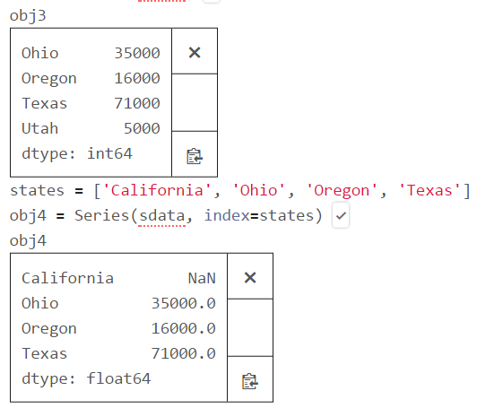
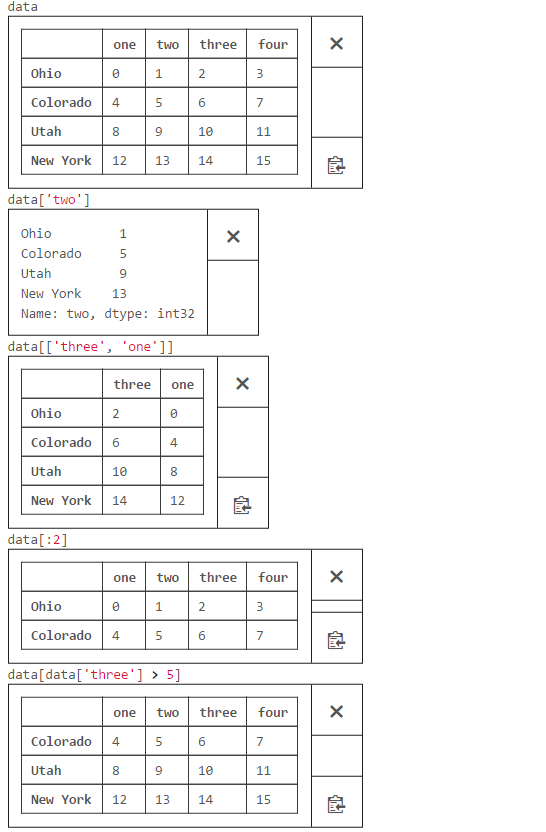
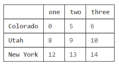
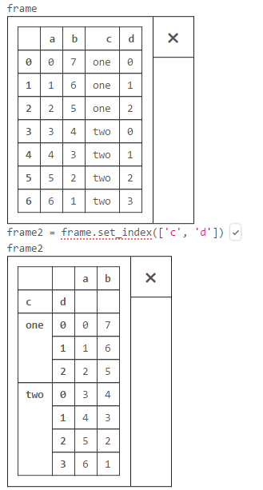

Python
|
|
Interaction with OS and Jupyter
OS here refers to the Windows operating system. Jupyter refers to Jupyter Notebook, a web-based application on server-client structure allowing users to create and manipulate .pynb file and execute it through an internet browser.
Change current directory
To get the full path to the directory a Python file is contained in, write this in that file:
Documentation references for the modules, constants and functions used above:
- The
osandos.pathmodules. os.getcwd()(returns “a string representing the current working directory”)os.chdir("C:/path/to/location")(“change the current working directory to path”)
Use a context manager to change the working directory Note that changing the current working directory in a subprocess (such as os.chdir(path)) does not change the current working directory in the parent process. This is true of the Python interpreter as well. You cannot use os.chdir() to change the CWD of the calling process. Instead use a context manager and with statement for this task:
Example:
Clear all variables in Spyder
Simply type %reset. For removing a particular variable bar, use del bar.
Autocompletion & search
Tab. Python shell is tab completion, a feature common to most interactive data analysis environments. While entering expressions in the shell, pressing <Tab> will search the namespace for any variables (objects, functions, etc.) matching the characters you have typed so far.
Question Mark. Using a question mark (?) before or after a variable will display some general information about the object. This is referred to as object introspection.
Wildcard. A number of characters combined with the wildcard (*) will show all names matching the wildcard expression. For example, we could get a list of all functions in the top level NumPy namespace containing load
Execute code from the clipboard
Jupyter command %cpaste takes whatever text is in the clipboard and executes it as a single block in the shell.
Dos mode
!cmd execute cmd in the system shell and %pwd returns the current system working directory in Jupyter Notebook.
Timing the runtime
Timing code by hand using the built-in time module and its functions time.clock andtime.time is often tedious and repetitive:
Otherwise, in Jupyter Notebook, two magic functions can automate the process for you: %time and %timeit.
The Basics
Lists
Lists for floats
|
|
You can also use square brackets to “slice” lists:
Pythons has an in operator to check for list membership and a list can be concatenate with other lists.
It is often convenient to unpack lists if you know how many elements they contain:
It’s common to use an underscore for a value you’re going to throw away:
List concatenation
|
|
Strings
Strings can be delimited by single or double quotation marks (but the quotes have to match):
Python uses backslashes to encode special characters.
If you want backslashes as backslashes (which you might in Windows directory names or in regular expressions), you can create raw strings using r””:
You can create multiline strings using triple-double-quotes:
Tuples
Tuples are lists’ immutable cousins. Pretty much anything you can do to a list that doesn’t involve modifying it, you can do to a tuple. You specify a tuple by using parentheses (or nothing) instead of square brackets:
Tuples are a convenient way to return multiple values from functions:
Tuples (and lists) can also be used for multiple assignment:
Dictionaries
Basics
Another fundamental data structure is a dictionary, which associates values with keys and allows you to quickly retrieve the value corresponding to a given key:
You can check for the existence of a key using in:
Dictionaries have a get method that returns a default value (instead of raising an exception) when you look up a key that’s not in the dictionary:
You assign key-value pairs using the same square brackets:
We use dictionaries as a simple way to represent structured data:
Task: word counts in article
As you check each word, you can increment its count if it’s already in the dictionary and add it to the dictionary if it’s not:
A defaultdict is like a regular dictionary, except that when you try to look up a key it doesn’t contain, it first adds a value for it using a zero-argument function you provided when you created it.
Defaultdict can also be useful with list or dict or even your own functions:
|
|
These will be useful when we’re using dictionaries to “collect” results by some key and don’t want to have to check every time to see if the key exists yet.
A Counter turns a sequence of values into a defaultdict(int)-like object mapping keys to counts. We will primarily use it to create histograms:
|
|
Task: create and print a nested dictionary
Reference: stackoverflow
Create a file with students, each record having name of student, percent marks obtained in different subjects such as Maths, Physics and Chemistry, which may look like:
To print the newly created dictionary student_info:
Sets
Basics
|
|
Check membership
We’ll use sets for two main reasons. The first is that in is a very fast operation on sets. If we have a large collection of items that we want to use for a membership test, a set is more appropriate than a list:
The second reason is to find the distinct items in a collection:
Functions
enumerate
When indexing data, a useful pattern that uses enumerate is computing a dict mapping the values of a sequence (which are assumed to be unique) to their locations in the sequence:
sorted
|
|
A common pattern for getting a sorted list of the unique elements in a sequence is to combine sorted with set:
zip
zip “pairs” up the elements of a number of lists, tuples, or other sequences, to create a list of tuples:
zip can take an arbitrary number of sequences, and the number of elements it produces is determined by the shortest sequence:
A very common use of zip is for simultaneously iterating over multiple sequences, possibly also combined with enumerate:
| 0 | foo | one |
|---|---|---|
| 1 | bar | two |
| 2 | baz | three |
unzip
Another way to think about this is converting a list of rows into a list of columns.
Nolan Ryan
Roger Clemens
Schilling Curt
NumPy
NumPy is a library for the Python programming language, adding support for large, multi-dimensional arrays and matrices, along with a large collection of high-level mathematical functions to operate on these arrays.
String and tuples are immutable, while lists, dicts, NumPy arrays, user-defined types (classes) are mutable, meaning that the object or values that they contain can be modified. You can preface the leading quote of the string with rwhich means that the characters should be interpreted as is.
|
|
Create ndarray
An ndarray, short for n-dimensional array, object is a generic multidimentional container for homogeneous data; all of the elements must be the same type.
By randomization
|
|
By functions
array() & dtype
The array function accepts any sequence-like object (including other arrays) and produces a new NumPy array containing the passed data. A list is a good candidate for conversion:
nan()
|
|
shape() & ndim
Nested sequences, like a list of equal-length lists, will be converted into a multi-dimentional array:
zeros() & ones() & empty()
zeros and ones create arrays of 0’s or 1’s. To create a higher dimensional array with these methods, pass a tuple for the shape. Note that it’s not safe to assume that np.empty will return an array of all zeros.
arange() & reshape()
arange() is an array-valued version of the built-in Python range function. It returns an ndarray instead of a list:
|
|
Type conversion
dtype
A standard double-precision floating point value (what’s used under the hood in Python’s float object) takes up 8 bytes or 64 bits. This type is known in NumPy as float64.
To create a string dtype with length 10, use the type code S10(1 byte per character). For creating a unicode dtype with length 10, use U10:
astype()
|
|
Optional parameters: np.string_ and np.unicode_
|
|
|
|
String to numeric_string
See the topic about “missing data” in the Pandas section.
Factorization
basic
|
|
|
|
|
|

string vector creation & frequency
[Trick] Based on a list of automatically generated strings to perform grouping:
Operations between arrays and scalars Arrays are important because they enable you to express batch operations on data without writing any for loops. This is usually called vectorization. Any arithmetic operations between equal-size arrays applies the operation element-wise.
Indexing
If you assign a scalar value to a slice, as in arr[5:8] = 12, the value is propagated (or broadcasted henceforth) to the entire selection. An important first distinction from lists is that array slices are views on the original array. This means that the data is not copied, and any modifications to the view will be reflected in the source array:
One-dimension indexing
Python (and C++) is row-major, while Fortran (Julia, R, and Matlab) is column-major.
If you need to explicitly copy the array instead of a view of it, use copy():
Note that when assigning a variable (or name) in Python, you are creating a reference to the object on the right hand side of the equals sign. Python is said to always pass-by-reference, whereas some other languages (like C++) support various argument passing conventions, including as pass-by-value (creating copies) and pass-by-reference. This means that a function in Python can alter the internals of its arguments.
Multi-dimensions indexing
In multidimensional arrays, if you omit later indices, the returned object will be a lower-dimensional ndarray consisting of all the data along the higher dimensions.
Note that the “outtermost” bracket represents the “lowest” dimension.
Multi-dimensional slicing
A slice selects a range of elements along an axis.
Note that a colon by itself means to take the entire axis, so you can slice only higher dimensional axes by doing:
Boolean indexing
Make a subset of observations The boolean array must be of the same length as the axis it’s indexing. Selecting data from an array by boolean indexing always creates a copy of the data, even if the returned array is unchanged.
Multiple conditions
The Python keywords and and or do not work with boolean arrays, because the boolean operators and and or in Python are so-called short-circuit operators: their arguments are evaluated from left to right, and evaluation stops as soon as the outcome is determined.
|
|
Re-ordering
Fancy indexing is a term adopted by NumPy to describe indexing using integer arrays. To select out a subset of the rows in a particular order, you can simply pass a list or ndarray of integers specifying the desired order
Select a square region
|
|
|
|

|
|
Plot with meshgrid method
The np.meshgrid function takes two 1D arrays and produces two 2D matrices corresponding to all pairs of (x, y) in the two arrays.
With equal number of points
|
|
Note that a//b means “floor-divide” a by b, dropping any fractional remainder. a**b means “raise a to the b power”
With different number of points in x, y axis
|
|
Task: utility surface
|
|
Combining series: zip()
Expressing conditional logic as array operations:
all() & where()
The numpy.where function is a vectorized version of the ternary expression x if condition else y. A typical use of where in data analysis is to produce a new array of values based on another array. Suppose you had a matrix of randomly generated data and you wanted to replace all positive values with 2 and all negative values with -2.
Partial replacement
Example 1.
Example 2. Consider I have two boolean arrays, cond1 and cond2, and wish to assign a different value for each of the 4 (2x2=4) possible pairs of boolean values.
more: Bitwise operators; Operator Precednece
Counting events
Boolean values are coerced to 1 (True) and 0 (False) in the above methods. Thus, sum is often used as a means of counting True values in a boolean array:
any tests whether one or more values in an array is True, while all checks if every value is True:
Set logic
NumPy has some basic set operations for one-dimensional ndarrays. Probably the most commonly used one is np.unique, which returns the sorted unique values in an array.
unique()
|
|
Membership inspection
To test membership of the values in one array in another, returning a boolean array, use in1d
More: intersect1d, union1d, setdiff1d, setxor1d2
Grouping columns
|
|
Functions
Almost every object in Python has attached functions, known as methods, that have access to the object’s internal contents.
Unary universal functions
A universal function is a function that performs element-wise operations on data in ndarrays: sqrt(), square(), ceil(), floor(), rint(), modf(), isnan(), isfinite(), isinf().
swapaxes(), sum() & mean()
|
|
Cumulation
Other methods like cumsum and cumprod do not aggregate, instead producing an array
of the intermediate results:
More: min, max, argmin, argmax
Sorting
The top level method np.sort returns a sorted copy of an array instead of modifying
the array in place.
|
|
Quantiles
Task: Compute the quantiles of an array.
Hint: use the sort method to have it sorted in-place.
tile & repeat
|
|
Binary universal functions
Take 2 arrays (thus, binary ufuncs) and return a single array as the result: maximum(), subtract(), modf()
More functions: add, subtract, multiply, divide, floor_divide, power, maximum, fmax, minimum, fmin, mod, copysign
Transpose and swap axes
To compute the inner matrix product $X^T X$ use np.dot.
.transpose() & .dot()
|
|
File input and output
np.save, np.load, np.savez
np.save and np.load are the two workhorse functions for efficiently saving and loading
array data on disk. Arrays are saved by default in an uncompressed raw binary format
with file extension .npy.
When loading an .npz file, you get back a dict-like object which loads the individual arrays lazily
np.loadtxt
|
|
Linear algebra
There is a function dot, both an array method, and a function in the numpy namespace, for matrix multiplication:
numpy.linalg has a standard set of matrix decompositions and things like inverse anddeterminant.
More: diag, dot, trace, det, eig, inv, pinv, qr, svd, solve, lstsq
Case Study: Random Walk
The numpy.random module supplements the built-in Python random with functions for
efficiently generating whole arrays of sample values from many kinds of probability distribution.
Method 1
|
|
More: seed, permutation, shuffle, rand, randint, randn, binomial, normal, beta, chisquare, gamma, uniform
xrange is a sequence object that evaluates lazily. range creates a list, so if you do range(1, 10000000) it creates a list in memory with 10000000 elements. xrange is a generator, so it is a sequence object is a that evaluates lazily.
Method 2
Alternatively, use the np.random module to draw 1,000 coin flips at once, set these to 1 and -1, and compute the cumulative sum.
Task: First crossing time, the step at which a random walk reaches a particular value.
How long did it take the random walk to get at least 10 steps away from the origin 0 in either direction
Turns out this can be computed using argmax, which returns the first index of the maximum value in the boolean array (True is the maximum value). Note that using argmax here is not always efficient because it always makes a full scan of the array. In this special case once a True is observed we know it to be the maximum value.
Simulating many random walks at once
Task: Compute the minimum crossing time to 30 or -30.
Hint: Compute the average of the first crossing time across histories
Experiment with other probablity distribution for the steps other than equal sized coin flips:
Pandas
Data preparation refers to cleaning, munging, wranggling, reshaping raw data.1
Modules
Series
A Series is a one-dimensional array-like object containing an array of data (of any NumPy data type) and an associated array of data labels, called its index. Compared with a regular NumPy array, you can use values in the index when selecting single values or a set of values.
NumPy array operations, such as filtering with a boolean array, scalar multiplication,
or applying math functions, will preserve the index-value link:
Another way to think about a Series is as a fixed-length, ordered dict, as it is a mapping
of index values to data values.
When to use series. If you have data contained in a Python dict, you can create a Series from it by passing the dict:

When only passing a dict, the index in the resulting Series will have the dict’s keys in sorted order. In this case, 3 values found in sdata were placed in the appropriate locations, but since no value for ‘California’ was found, it appears as NaN (not a number) which is considered in pandas to mark missing or NA values.
isnull() & notnull()
The isnull and notnull functions in pandas should be used to detect missing data:
|
|
indexing
Series indexing (obj[…]) works analogously to NumPy array indexing, except you can use the Series’s index values instead of only integers.
A Series’s index can be altered in place by assignment:
element-wise operations
|
|
DataFrame
The DataFrame has both a row and column index; it can be thought of as a dict of Series, each of which can be a different value type (numeric, string, boolean, etc.). The resulting DataFrame will have its index assigned automatically as with Series, and the columns are placed in sorted order.
New column
As with Series, if you pass a column that isn’t contained in data, it will appear with NA values in the result:
If you assign a Series to a column, it will be instead conformed exactly to the DataFrame’s index, inserting missing values in any holes:
Column name
|
|
Access data
|
|
Columns can be modified by assignment:
As you’ve seen above, indexing into a DataFrame is for retrieving one or more columns either with a single value or sequence. Indexing like this has a few special cases. First selecting rows by slicing or a boolean array:

|
|
loc() & iloc()
|
|
|
|

|
|
element-wise operations
|
|

|
|
More: add, sub, div, mul
|
|

|
|
Delete rows/columns with np.nan
|
|
Delete a column
Add or delete a column from a DataFrame.
del
|
|
Note the column returned when indexing a DataFrame is a view on the underlying data, not a copy. Thus, any in-place modifications to the Series will be reflected in the DataFrame. The column can be explicitly copied using the Series’s copy method.
drop()
|
|

|
|

|
Nested dict inputs
When a nested dict is passed to DataFrame, it will interpret the outer dict keys of the passed data as the columns and the inner keys as the row indices. The keys in the inner dicts are unioned and sorted to form the index in the result. This rule isn’t true if an explicit index is specified:
Subset by rows
|
|
name & value attributes
If a DataFrame’s index and columns have their name attributes set, these will also be displayed:
Index immutable
Any array or other sequence of labels used when constructing a Series or DataFrame is internally converted to an Index. In addition to being array-like, an Index also functions as a fixed-size set:
|
|
Index as a set
reindex
To create a new object with the data conformed to a new index:
More: append, diff, intersection, union, isin, delete, drop, insert, is_monotonic, is_unique, unique
set_index & reset_index
It’s not unusual to want to use one or more columns from a DataFrame as the row index; alternatively, you may wish to move the row index into the DataFrame’s columns.

|
|
Interpolation
For ordered data like time series, it may be desirable to do some interpolation or filling of values when reindexing. The method option allows us to do this, using a method such as ffill which forward fills the values:
|
|
More: index, method, fill_value, limit, level, copy
Apply a function to a DataFrame
NumPy ufuncs (element-wise array methods) work fine with pandas objects (DataFrame and Series).
DataFrame.apply on rows/columns
|
|
|
|
|
|
DataFrame.applymap on elements
|
|
Sorting
Sorting a data set by some criterion is another important built-in operation. To sort lexicographically by row or column index, use the sort_index method, which returns a new, sorted object.
sort_index
|
|
sort_values
|
|
Ranking is assigning ranks from one through the number of valid data points in an array. By default, rank breaks ties by assigning each group the mean rank.
ranking
|
|
reindexing after sorting
Use reset_index to get the index back to a default index of 0, 1, …, n (and use drop=True to indicate you want to drop the existing index instead of adding it as a column to your dataframe).
Duplicate indexes
|
|
Functions
describe() & dtypes
|
|
locate maximum
|
|
Case study: stock markets
Yahoo finance
|
|
Google finance
|
|
Subsetting
Case study: histogram
|
|
|
|
Case study: histogram
|
|
Missing data
Pandas uses the floating point value NaN (Not a Number) to represent missing data in both floating as well as in non-floating point arrays. It is just used as a sentinel that can be easily detected.
detection
|
|
fill
|
|
drop
|
|
drop with criteria
Suppose you want to keep only rows containing a certain number of observations. You can indicate this with the thresh argument:
replace NaN other than zero
|
|
fill in limited scope
|
|
fill with mean()
|
|
replace strings
|
|
string to numeric
|
|
Hierarchical indexing
stack() & unstack()
|
|
MultiIndex
|
|
levels reordering
|
|
Case study: panel data
To create a Panel, you can use a dict of DataFrame objects or a three-dimensional ndarray:
Python OOP
OOP refers to Object-Oriented Programming.
Applications of Python
Machine learning
- Scikit-learn module
- TensorFlow module
Data mining
- Scrapy module
- Pattern module
MySQL
Reference: MySQLTutorialTableau
Reference: Tableau Integration with Python
- 1.Data munging or data wrangling is loosely the process of manually converting or mapping data from one “raw” form into another format that allows for more convenient consumption of the data with the help of semi-automated tools. ↩
- 2.Set symmetric differences: elements that are in either of the arrays, but not both. ↩